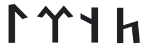
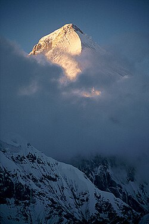
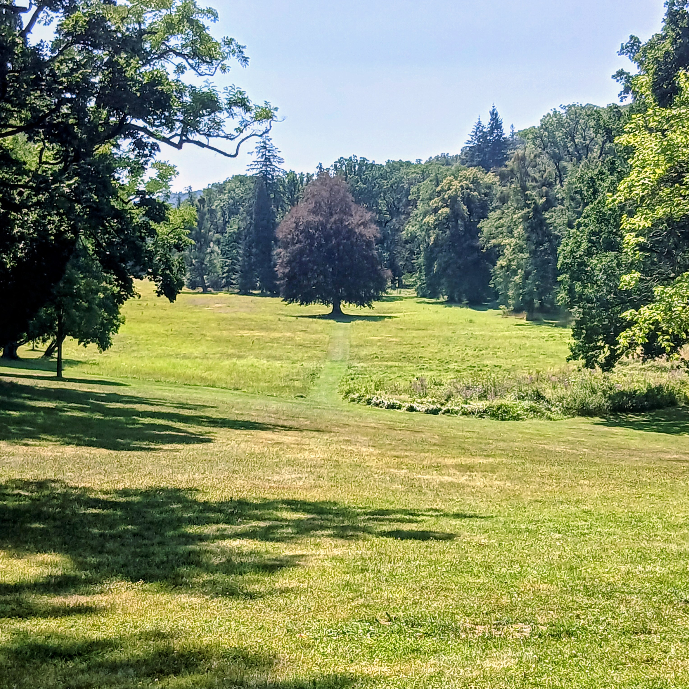

Přivítání
Vítejte pod Věčným modrým nebem.
Vítejte na stránkách Tengri.cz, které jsou věnovány jedné z nejstarších, a přesto stále živých duchovních tradic lidstva.
Tengrismus není náboženstvím svázaným dogmaty, knihami nebo zdmi chrámů. Je to filozofie svobody, která se zrodila v nekonečných středoasijských stepích, na vrcholcích Altaje a v hlubokých sibiřských tajgách. Je to cesta přirozené úcty, která nás učí, že vše kolem nás – každá hora, řeka, strom i zvíře – má svou vlastní duši a zaslouží si náš respekt.
Proč jste zde správně?
Ať už vás na tyto stránky přivedla touha po poznání historie kočovných kultur, zájem o autentický šamanismus, nebo prostě hledáte způsob, jak v dnešním zrychleném světě znovu nalézt ztracené spojení s přírodou, jste na správném místě. Tengrismus nabízí nadčasové odpovědi na otázky rovnováhy mezi člověkem, komunitou a vesmírem.
Vstupte dál, naslouchejte šepotu větru a objevte moudrost, která přetrvala tisíciletí. Nechť vás na vaší cestě provází síla a požehnání Věčného nebe!
Co je tengrismus
Tengrismus je prastará duchovní tradice a životní filozofie středoasijských kočovníků, která formovala vědomí národů jako byli Mongolové, Turci či Hunové. Nejedná se o náboženství v klasickém západním smyslu s pevnými dogmaty a svatými knihami, ale o organické propojení šamanismu, animismu a hluboké úcty k předkům.
Ústředním bodem celého systému je Tengri – Věčné modré nebe, které představuje nejvyšší, nepersonifikovanou vesmírnou sílu, tvořící a udržující vesmírný řád. Druhým klíčovým pilířem je posvátný vztah k Zemi a přírodě. Tengrismus vychází z přesvědčení, že vše kolem nás (hory, řeky, stromy i zvířata) má svého vlastního ducha a lidská bytost není pánem tvorstva, nýbrž pouhou součástí tohoto živého celku. Cílem lidského života je tak udržování neustálé harmonie mezi Nebe, Zemí a lidskou komunitou.
Tengri a Umay
V tengrismu představují Tengri a Umay dva základní, protikladné a přesto hluboce propojené kosmické principy. Jsou ekvivalentem otcovského a mateřského archetypu, skrze jejichž součinnost vzniká a drží pohromadě celý viditelný svět.
Tengri: Otcovské nebe
Tengri (či Kök Tengri – Věčné modré nebe) je nejvyšší, mužský princip.
- Charakteristika: Nepředstavuje postavu s lidskou tváří, ale samotný prostor nebes, světlo a vesmírný řád. Je nehybný, vševědoucí a spravedlivý.
- Role: Dává lidem a všem tvorům Kut (duchovní životní sílu, duši) a určuje osud celého světa. Je tím, kdo shora dohlíží na morální čistotu a rovnováhu.
Umay (Umay Ana): Mateřská země
Umay (v překladu z prastarých turkických jazyků znamenající "lůno" nebo "placenta") je nejvyšší ženský, mateřský princip.
- Charakteristika: Na rozdíl od neosobního Tengriho bývá Umay v mýtech personifikována mnohem jasněji – často jako žena s křídly, zlatými vlasy či korunou, která sestupuje z nebes, aby pomáhala lidem.
- Role: Je bohyní plodnosti, země, hojnosti a ochránkyní rodinného krbu. Má na starosti fyzické zrození. Zjednodušeně: Zatímco Tengri dává člověku nebeskou duši, Umay mu dává v lůně matky fyzické tělo.
Tři světy
Kosmologie tří světů
Vesmír je v tengrismu vnímán jako živý, propojený organismus rozdělený do tří sfér. O osudu lidské duše a rovnováze celého bytí rozhoduje trojice nejvyšších božstev spolu s osudem samotné přírody.
1. Nebe: Ucmag (Horní svět)
Ucmag je říší světla, čistoty a domovem nebeských božstev.
- Struktura: Nebe je rozděleno do 7 hierarchických částí (úrovní). Čím čistší duše je, do tím vyšší úrovně stoupá.
- Podoba: Ucmag nevypadá jako sterilní chrám, ale jako dokonalá, čistá a nedotčená příroda. Jsou zde průzračné řeky, nekonečné zelené stepi a posvátné lesy, kde duše žijí v absolutním pokoji.
2. Hmotný svět (Střední svět)
Náš viditelný svět. Místo, kde lidé dostávají šanci žít, tvořit a svým chováním prokazovat úctu k řádu vesmíru. Je to křižovatka, kde se rozhoduje o budoucím osudu naší duše.
3. Podsvětí: Tamag (Dolní svět)
Tamag je říší očištění, transformace a duchů předků, kterému vládne Erlik Chán.
- Struktura: Stejně jako nebe, i podsvětí má 7 částí (úrovní), které odpovídají závažnosti lidských provinění.
- Spravedlnost a očista: Tamag není místem věčného zatracení (jako křesťanské peklo). Slouží jako duchovní nápravné zařízení. Jakmile duše v Tamagu po určité době odčiní své prohřešky a očistí se, nakonec vystoupí vzhůru do Nebe Ucmag.
Posmrtný soud a trojice božstev
Po smrti člověka se jeho duše ocitá před nejvyšším soudem. O tom, kam duše odejde, rozhodují společně tři hlavní síly vesmíru:
- Tengri: Hodnotí, zda člověk žil v souladu s vesmírným řádem a zda správně nakládal se svou životní silou (Kut).
- Umay: Posuzuje, jak se člověk choval k Zemi, přírodě, rodině a všemu živému.
- Erlik: Vládce podsvětí, který váží lidské hříchy a určuje úroveň v Tamagu, kde si duše musí své chyby odpykat.
Strom života: Osa vesmíru a ekologické varování
Všechny tři světy (Ucmag, Hmotný svět i Tamag) drží pohromadě a vertikálně propojuje Strom života (v některých tradicích nazývaný Baiterek). Jeho kořeny sahají hluboko do podsvětí Tamagu, kmen prochází naším hmotným světem a koruna se rozpíná v 7 úrovních nebe Ucmag.
⚠️ Zásadní varování Stromu života
Strom života není nezničitelný – je přímo napojen na chování lidstva ve Středním světě.
Pokud lidé budou ničit přírodu, kácet posvátné lesy, špinit řeky a žít bez úcty k planetě, Strom života bude slábnout. Kdyby lidská chamtivost zašla tak daleko, že by Strom zahynul, znamenalo by to okamžitý konec a kolaps všech tří světů najednou. Ekologie je tak v tengrismu otázkou přežití celého vesmíru.
Interaktivní Vizualizace Kosmologie (Tři světy & 15 vrstev)
Kliknutím na jednotlivé vrstvy podél Stromu života (Baiterek) si můžete zobrazit podrobné informace.
Duše
V tengristické tradici je pojetí lidského vědomí nesmírně komplexní. Člověk není tvořen pouze jedním tělem a jednou duší. Každá živá bytost v sobě nese tři odlišné duše (či duchovní složky), z nichž každá má jiný původ, jinou funkci během života a zcela jiný osud po smrti.
Zde je podrobný přehled této fascinující anatomie lidského ducha:
1. Amin (Duše dechu a života)
Amin je biologická životní síla, která je úzce spjata s fyzickým tělem.
- Původ a funkce: Tuto duši dává člověku (a všem živým tvorům) bohyně Umay při početí a zrození. Projevuje se jako dech, tělesné teplo a tlukot srdce. Je to síla, která oživuje hmotu.
- Po smrti: V momentě, kdy tělo zemře a člověk naposledy vydechne, duše Amin zaniká, respektive se vrací zpět do přírody (k bohyni Umay), aby dala život novým stvořením. Reinkarnuje se v rámci přírodního cyklu.
2. Suns (Duše vědomí a emocí)
Suns je individuální duše, která nese naši osobnost, vzpomínky, inteligenci, city a ego. Je to to, co vnímáme jako své „já“.
- Původ a funkce: Tuto duši sesílá Tengri z nebes. Během spánku nebo v šamanském tranzu může Suns dočasně opustit tělo a cestovat (což se projevuje jako sny).
- Po smrti: To je ta část duše, která odchází k posmrtnému soudu před trojici božstev (Tengri, Umay, Erlik). Pokud má na sobě prohřešky, sestupuje do 7 úrovní podsvětí (Tamagu), kde se očišťuje. Jakmile své viny odčiní, vystoupí do nebeského světa (Ucmag).
3. Sulde (Duše identity a síly)
Sulde je nejvíce fascinující složka. Je to duše spojená s osobní silou, charismatem, ctí, odvahou a samotnou esencí rodu. Je pevně spjata s kostmi (zejména s klíční kostí nebo lebkou) a s vlasy.
- Původ a funkce: Je to jakýsi duchovní otisk, který člověk během života aktivně spoluvytváří svými činy, odvahou a morálkou. Síla Sulde určuje, jak moc je člověk v životě úspěšný a jak silnou má vůli.
- Po smrti a kult předků: Na rozdíl od Suns, která odchází na soud, duše Sulde neodchází do jiných světů. Zůstává v našem Hmotném světě a stává se duchem předka.
Význam pro kult předků
Právě díky duši Sulde dává v tengrismu kult předků hluboký smysl.
- Když váš dědeček nebo prababička zemřou, jejich Suns sice odešla na duchovní cestu do Ucmagu, ale jejich Sulde zůstává nablízku své rodině a zemi. Stává se ochranným duchem rodu.
- Lidé ji mohou volat na pomoc v těžkých chvílích.
- Usazuje se v rituálních předmětech, rodových symbolech nebo na posvátných místech přírody (např. u kamenů Ovoo).
- Pokud rod žije čestně, Sulde jejich předků je posiluje. Pokud potomci dělají hanbu, Sulde předků slábne a rod ztrácí ochranu.
Yersu
V tengristickém učení zaujímají Yersu nezastupitelné místo. Nejde o jednu konkrétní bytost, ale o rozsáhlý a rozmanitý systém duchů, kteří oživují a chrání samotnou Zemi (Střední svět). Jsou to přírodní duchové, zosobnění hor, řek, lesů, jezer a samotných přírodních sil, s nimiž je člověk v neustálém kontaktu a se kterými musí žít v harmonii.
Přírodní duchové yersu
Yersu doslova znamená "Země-Voda" a tento termín označuje duchy, kteří jsou s těmito živly a celou pozemskou přírodou neoddělitelně spjati.
- Strážci rovnováhy: Nejsou to abstraktní božstva dlící v nebesích, ale blízcí, lokální duchové, kteří obývají konkrétní místa ve Středním světě. Mají za úkol chránit svěřenou část přírody a dohlížet na to, aby lidé nenarušovali její přirozený řád.
- Vztah s lidmi: Jsou velmi citliví na lidské chování. Pokud člověk vstupuje do přírody s úctou, chová se k ní šetrně a přináší drobné obětiny (například uváže stužku na posvátný strom nebo kámen, nebo obětuje trochu mléka či tuku zvířatům), Yersu mu mohou požehnat, chránit ho na cestách a zajistit mu hojnost.
- Důsledky neúcty: Pokud se však člověk k přírodě chová bez respektu – loví více, než potřebuje k přežití, znečišťuje prameny, nesmyslně kácí stromy nebo se v přírodě chová hlučně a arogantně – Yersu se mohou rozhněvat. Jejich hněv se může projevit jako neúspěch v lovu, nemoci, přírodní katastrofy nebo bloudění a neštěstí.
Z duší v Ucmag si Tengri vybere některé duše které se stanou přírodními duchy yersu
Tengrismus nabízí fascinující pohled na původ těchto duchů. Jak se vlastně v přírodě objevují?
- Zrození z čistoty: Zatímco lidské duše, které prošly očištěním a dosáhly nebeské sféry Ucmag, tam mohou spočinout v míru, Tengri, Věčné modré nebe, z nich může vybrat ty nejčistší a nejušlechtilejší duše a pověřit je novým, vznešeným posláním.
- Návrat na Zemi s posláním: Tyto vybrané duše se nestávají bohy, ale jsou vyslány zpět do Středního světa, aby se staly Yersu – duchovními strážci konkrétních míst. Stávají se duchem posvátné hory, jezera, starého lesa nebo silného pramene.
- Živá a propojená příroda: Tento koncept zdůrazňuje, že celá příroda je doslova prodchnuta duchovní podstatou a že duchové přírody a duše předků jsou úzce provázáni. Hora či řeka tak může být oživována a chráněna duší dávného, výjimečného člověka, který se po svém nebeském spočinutí vrátil na Zemi, aby na ni dohlížel z pověření samotného Tengriho.
Praxe pro úplné začátečníky
Jak začít s praxí v moderním světě
Následovat tuto prastarou cestu nevyžaduje život ve stepi. Nejde o vnější kulisy, ale o váš vnitřní postoj. Praktikovat můžete začít hned teď, a to i uprostřed rušného města:
- Zastavte se a pozorujte: Najděte si denně chvíli na propojení s přírodou. Vnímejte nebe, vítr a slunce. Uvědomte si, že jste neoddělitelnou součástí světa.
- Respektujte vše živé: Přistupujte k jídlu i vodě s vděčností. Neplýtvejte, chraňte Zemi a pamatujte, že vše v přírodě má svou duši.
- Uctěte své předky: Věnujte jim tichou vzpomínku, například u zapálené svíčky. Poděkujte za život a sílu, kterou vám předali. Jejich odkaz vás chrání, pokud žijete čestně.
- Vyjadřujte vděčnost: Mluvte k nebesům jednoduše a vlastními slovy. Upřímná myšlenka či modlitba ze srdce je důležitější než jakékoliv složité rituály.
- Hledejte vnitřní rovnováhu: Žijte v souladu se svým svědomím. V těžkých situacích jednejte s klidem jako pevně zakořeněný strom a vyhýbejte se nespravedlnosti.
Tato cesta není o slepé poslušnosti pravidlům, ale o hlubokém pochopení našeho spojení s vesmírem. Je to cesta svobody, respektu a rovnováhy.
Modlitby
Ctihodný věčně nebeský Otče Tengri,
děkuji Ti za udělení vzácného daru kterým je život.
Vzývám Tě jako Toho kdo je nekonečně milující a velice spravedlivý.
Ty jsi Ten kdo je Vesmír samotný.
Ty jsi Ten kdo je všude kolem mě.
Velebná Svatá manželko Tengriho Umay,
děkuji Ti za Tvou mateřskou lásku a za to že mohu žít tento krásný život.
Vzývám Tě jako Matku veškeré přírody.
Ty jsi Ta kdo je přítomna v každém nádechu i výdechu který mě udržuje živého.
Ty jsi Ta kdo chrání nejmladší bytosti kterými jsou děti a mláďata.
Chválá Vám oběma jenž jste Božský základ všeho.
Nekonečně Milující Otče Tengri,
prosím Tě o duchovní požehnání pro člověka za kterého se teď modlím s jeho souhlasem.
Velice Tě s mou vírou žádám a prosím abys pomohl danému člověku bojovat s touto nemocí.
Je-li Tvá Svatá Vůle ho uzdravit tak se modlím abys ho uzdravil z toho co ho trápí.
Chvála Tobě Nejvyšší Pane Tengri.
Králi Bohů Pane Tengri,
obracím se k Tobě v půlce mé dnešní cesty
abych Ti vyjádřil obdiv za dosavadní svatý a požehnaný den.
Prosím Tě s radostí o všechna důležitá požehnání pro zbytek dnešního dne.
Jsem rád že skrze jednu ze tří duší mohu dobře dýchat a cítit celý svět.
Ty jsi Ten Svrchovaný Vládce.
Chvála Tobě a děkuji za krásný zbytek dne.
Blahoslavený Otče nebes Tengri,
jenž jsi Ta Věčná modrá obloha!
Chválíme Tvé jméno nebeské jenž sídlí na velehoře Khan Tengri!
Ty jenž jsi Spravedlivý rodič lidstva i všech bytostí a přírody!
Opravdu velmi chválíme Tvojí Nebeskou všemoudrost!
My jenž jsme Tvými dětmi slibujeme usilovat o mír v přírodě!
Ctíme Tě jako Prapůvod všeho!
Chvála Tengrimu!
Kurz Základy Tengrismu
Vítejte v kurzu Základy tengrismu. Následující videolekce vás provedou základy této prastaré duchovní tradice, její kosmologií, filozofií a praktickým prožíváním.
1. Lekce
2. Lekce
3. Lekce
4. Lekce
5. Lekce
6. Lekce
7. Lekce
8. Lekce
Odkazy
Doporučené video
Obrázky

Zdroj: Wikimedia Commons
https://commons.wikimedia.org/wiki/File:Orkhon.png

Autor: Simon Garbutt
Zdroj: Wikimedia Commons
https://commons.wikimedia.org/wiki/File:Peak_of_Khan_Tengri_at_sunset.jpg

Autor a zdroj: Vlastní fotka majitele webu